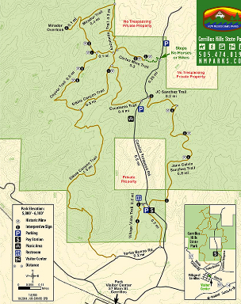

Hike New Mexico
w/ Tom & Ken
Cerrillos Hills Hike



- Nov 1, 2013: The dirt road in is also an interesting sight
- Nov 1, 2013: Trails weave through the hills
- Nov 1, 2013: From the trail, the hills...
- Nov 1, 2013: The state park near the so-called ghost town of Cerrillos
- Nov 1, 2013: From the trail, the Sandia to the south
- Nov 1, 2013: Autumn sun provides a unique look
- https://www.flickr.com/photos/139088815@N08/27411486772/in/album-72157669429537095
- https://www.flickr.com/photos/139088815@N08/26901142144/in/album-72157669429537095
- https://www.flickr.com/photos/139088815@N08/26901120764/in/album-72157669429537095
- https://www.flickr.com/photos/139088815@N08/27411511582/in/album-72157669429537095
- https://www.flickr.com/photos/139088815@N08/27233801760/in/album-72157669429537095
- https://www.flickr.com/photos/139088815@N08/27438107701/in/album-72157669429537095
Cerrillos Hills State Park is just outside of the 'ghost town' of Cerrillos (actually, there are over a hundred residents). From I-25, the road in (Waldo Canyon) is part of the great viewing of the area. Cerrillos Hills are full of old abandoned mines, now closed off, containing everything from galena to turquoise. The variety of turquoise from this area is a light blue and is given the name Cerrillos Turquoise. Hiking trails weave through the hills, so that various length trips are available. The Amigos de Cerrillos website has good information including a PDF trail map indicating trail segment lengths.